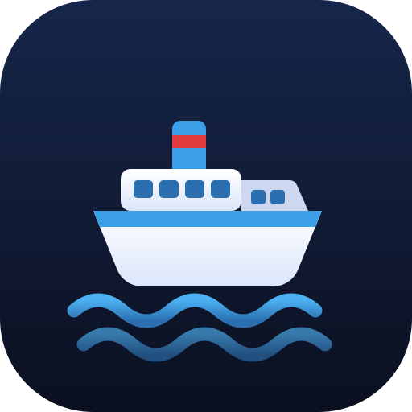

SeaRoutes
Live Western Cyclades ferries
Sea Routes
Live Western Cyclades ferries · routes reference
Live map
Routes
◐
Connecting…
Pick a route to open
live 2026 schedules & prices
on Ferryhopper. The list below is a
2023 reference
for which lines connect where — indicative only, no current times/prices.
From
⇄
To
Date
Pick a From and To port